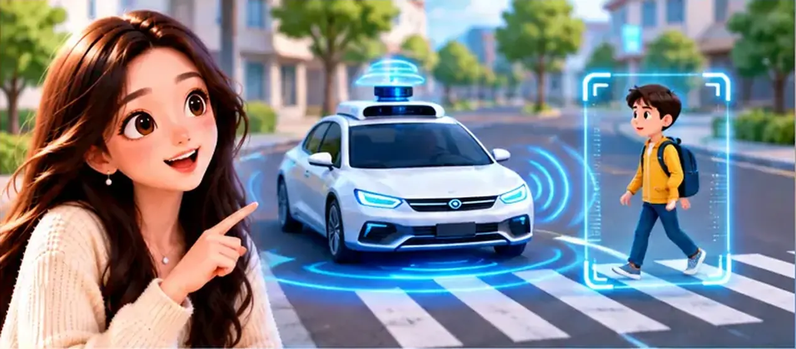

Welcome back to AI Knowledge Class. In Episode 1 we learned that AI is not just one app, and not only a chatbot. Some systems recognize and predict; others create new text, images, or audio. Today we compare those two families in plain language.
We will use two simple scenes: a smart car on the road (traditional AI at work) and a creative request at home (generative AI). Each picture sits beside the idea it explains.
You do not need formulas or product names to follow along. We only ask: what is the AI doing — sensing and deciding, or making something new? Keep that question in mind as you read.
By the end you should be able to tell a friend which tools “recognize and predict” and which ones “generate,” and why a single product can use both.
Traditional AI: recognize, judge, predict
Traditional artificial intelligence helps us recognize patterns, make judgments, predict what may happen next, and finish specific tasks — often without writing a story or drawing a picture.
To make that concrete, we start with something familiar almost everyone has seen — a car that uses sensors and software to stay aware of the road.
Example: a smart car

Imagine a very smart car driving down the street. A pedestrian steps into view. Cameras and sensors spot the person. The AI first recognizes: “There is a person ahead.” It judges distance and speed, predicts what could happen next, and may slow the car or trigger a safety action. No new essay — just recognition, judgment, prediction, and task completion.
It also asks: “How far away is that person?” It weighs speed, lane position, and road conditions before it chooses to brake or warn the driver. Notice what is missing: no new essay, no freshly drawn poster — only recognition, judgment, prediction, and a safety task.
That pattern — sense the world, think it through, predict, then act — is what people often mean by traditional AI. If you can describe those steps, you already understand the first half of today’s lesson.
Traditional AI shows up in many places: cars detecting people and vehicles, phones that recognize faces, maps that predict traffic, shops that recommend products, hospitals that help read scans, and factory robots guided by sensors. They analyze information, then recognize, judge, predict, or carry out a task.
What they share is the same job description: take in data, find a pattern or risk, decide what it probably means, and do something useful. Your photo app sorting “beach” and “birthday” without you tagging every picture is the same kind of work as a car spotting a pedestrian — different scene, same style of thinking.
When someone says “the AI recommended this video,” they usually mean traditional AI: the system watched patterns in what people clicked, guessed what you might like next, and ranked a list. It did not invent a new show from scratch.
Generative AI: create something new
Generative AI focuses on making new content when you ask — stories, pictures, songs, video ideas, or code.
Switch the scene from the street to your desk: you give a prompt, and the system answers with words or pixels that did not exist in that exact form a moment ago.
Picture yourself at home saying, “Write a short story about space travel.” The AI can draft a new story with characters and plot you did not type word for word. Ask again: “Draw an astronaut standing on Mars.” You may get an image that fits your idea even though you did not paint it yourself.
The same tool might help you outline a song, storyboard a short video, or suggest the first lines of a program. Each answer is generated for your request — that is the heart of generative AI.
A quick contrast: the smart car reacted to the pedestrian; generative AI produces something you can read, hear, or see. Both use AI, but the “output” feels different — safety action versus a poem, a picture, or code.
We call that ability generative artificial intelligence. If traditional AI is like a careful observer, generative AI is more like a creative partner — still imperfect, still worth checking, but built to make new material when you ask.
Better together
Traditional AI and generative AI are not totally separate boxes. Modern products often blend both.
Think again about a modern car: cameras for safety, navigation that predicts traffic, a voice assistant you can talk to, and driver-assist features. Different AI tools cooperate so the car feels smarter.
The safety stack is mostly traditional AI — spot, judge, predict. The voice assistant may sound generative when it speaks full sentences back to you, while still using recognition under the hood. Real products mix skills instead of picking only one label.
Behind both families sits a bigger toolbox: machine learning, deep learning, large language models, and names like GPT. They are related, not random buzzwords — and they help explain why ChatGPT can chat while your map only reroutes you.
Episode 3 walks through that AI family tree step by step — what each name means and how the pieces nest inside one another.
Coming up next
Before we close, here is the one-line version: traditional AI recognizes, judges, predicts, and finishes tasks; generative AI creates new content from your request. Many apps you use every week touch both styles.
Next time we unpack the AI family — machine learning, deep learning, large language models, GPT, and ChatGPT — and show how they nest together instead of competing like rival sports teams.
We will also answer a question you might already be wondering: why can ChatGPT understand what you say and write long answers, when a traffic app mostly predicts minutes and draws a new route?
Those complicated names start to make sense once you see the family tree. Bring your questions — we will take the AI Knowledge Class ladder one level deeper in Episode 3.